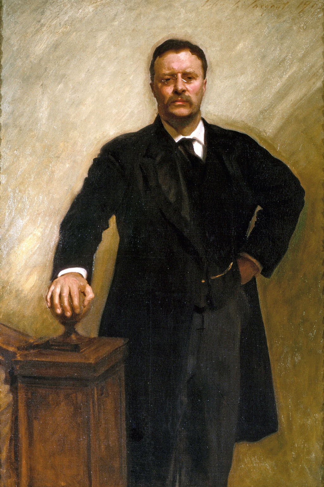

<head>
<meta charset="UTF-8" />
<meta name="keywords" content="drawing, painting" />
<meta name="description" content="drawings by Sunjy" />
<title>Sunjy</title>
<link rel="shortcut icon" type="image/x-icon" href="../../mImages/mCommon/favicon.ico" media="screen" />
<link rel="stylesheet" type="text/css" href="../../mCsses/mCommon/mCssA.css" />
<link rel="stylesheet" type="text/css" href="../../mCsses/mCommon/mCssB.css" />
<link rel="stylesheet" type="text/css" href="../../mCsses/mCommon/mCssC.css" />
<link rel="stylesheet" type="text/css" href="../../mCsses/mCommon/mCssD.css" />
<link rel="stylesheet" type="text/css" href="../../mCsses/mContent/mCssA.css" />
<link rel="stylesheet" type="text/css" href="../../mCsses/mContent/mCssB.css" />
<link rel="stylesheet" type="text/css" href="../../mCsses/mContent/mCssC.css" />
<link rel="stylesheet" type="text/css" href="../../mCsses/mContent/mCssD.css" />
</head>
<script type="text/javascript" src="../../mScripts/mContent/mContentAA.js" /></script>
<script type="text/javascript" src="../../mScripts/mContent/mContentAB.js" /></script>
<script type="text/javascript" src="../../mScripts/mContent/mContentAC.js" /></script>
<script type="text/javascript" src="../../mScripts/mContent/mContentAD.js" /></script>
<script type="text/javascript"></script> 
<script type="text/javascript">
document.write('<div class="mImgAbsolute"></div>');
/*
document.write('<p class="mFontSizeBColor" />From a white paper...</p>');
document.write('<table class="center"><tr><td>');
document.write('');
document.write('</td></tr></table>');
*/
</script>


<script type="text/javascript">
document.write('<p class="mFontSizeBColor" />Theodore Roosevelt</p>');
document.write('<p class="mFontSizeSColor" />“Theodore Roosevelt” by John Singer Sargent is Roosevelt’s official presidential portrait. Sargent depicts the President’s physical vitality and self-assurance in nuanced blacks, grays, browns, and creams. Sargent arrived in America in1903 and soon received a letter from Roosevelt inviting him to live in the White House for a  month to work on the portrait.<br><br>Sargent and Roosevelt toured the White House together while Sargent explored for appropriate light and pose. As Roosevelt led the artist up the stairs, the president said: “The trouble with you Sargent is that you don’t know what you want.” Sargent replied, “No, the trouble, Mr. President, is that you don’t know what a pose means.” Roosevelt grasped the stair post and snapped, “Don’t I!”<br><br>“Don’t move an inch. You’ve got it now,” responded Sargent.<br><br>Sargent formalized the pose and depicted Theodore Roosevelt with a near scowl expression and an expressive hand commanding the space.<br></p>');
document.write('<table class="center" /><tr><td>');
document.write('<br>Sargent and Roosevelt toured the White House together while Sargent explored for appropriate light and pose. As Roosevelt led the artist up the stairs, the president said: “The trouble with you Sargent is that you don’t know what you want.” Sargent replied, “No, the trouble, Mr. President, is that you don’t know what a pose means.” Roosevelt grasped the stair post and snapped, “Don’t I!”<br><br>“Don’t move an inch. You’ve got it now,” responded Sargent.<br><br>Sargent formalized the pose and depicted Theodore Roosevelt with a near scowl expression and an expressive hand commanding the space.<br>" />');
document.write('</td></tr></table>');
</script>


